Deploying Nutanix Enterprise AI on Red Hat OpenShift
How to run Nutanix Enterprise AI 2.8 on Red Hat OpenShift, for inference on x86_64 CPU nodes and on NVIDIA GPU nodes: what OpenShift needs that a Nutanix Kubernetes Platform cluster provides out of the box, the deployment steps, and what we learned doing it.
1Why NAI on OpenShift
Many enterprises standardise on Red Hat OpenShift for their container platform. Nutanix Enterprise AI (NAI) adds a governed model-serving service on top: a catalog of validated models, guided endpoint creation, one secure OpenAI-compatible gateway, role-based access, per-endpoint API keys, audit logging and per-endpoint metrics. NAI serves models with vLLM and runs as ordinary Kubernetes workloads, so it can run where the customer's platform team already operates.
The same NAI release serves two kinds of hardware:
- x86_64 CPU nodes for small models, development, and sites without accelerators. NAI uses its CPU build of vLLM.
- NVIDIA GPU nodes for production throughput and larger models. NAI uses its GPU build of vLLM, and the NVIDIA GPU Operator provides the driver and device plugin.
2Architecture
flowchart TB U["Users and applications
(browser, OpenAI-compatible clients)"] -->|"https://nai.apps.<cluster>.<domain>"| R["OpenShift router
(Route, TLS passthrough)"] R --> GW["NAI gateway
Envoy Gateway + AI Gateway"] subgraph OCP["Red Hat OpenShift"] GW --> CORE["NAI core
UI, API, IAM, metrics"] GW --> EPC["CPU endpoints
vLLM CPU"] GW --> EPG["GPU endpoints
vLLM GPU"] CORE --> PG["PostgreSQL
CloudNativePG"] KS["KServe + LeaderWorkerSet"] --> EPC KS --> EPG OPS["Operators: NFD, NVIDIA GPU, LVM Storage,
cert-manager, CloudNativePG"] end REG["Private registry
NAI air-gap images"] -.->|"docker.io mirror"| OCP NFS["NFS / RWX storage
model files"] -.-> EPC NFS -.-> EPG
3Prerequisites
| Item | Requirement | Lab |
|---|---|---|
| OpenShift | A version listed in the NAI requirements; cluster-admin access | 4.22.17, single-node OpenShift |
| Compute | NAI's platform services reserve about 19 vCPU of CPU requests on a single node (API 4, metrics database 4, gateway 3, PostgreSQL 2, others), and OpenShift a few more. Every endpoint reserves its own CPUs on top, GPU endpoints included. Plan at least 48 vCPU and 128 GB for a single node serving CPU and GPU endpoints. Recent x86_64 CPUs with AVX-512 (or Intel AMX) perform best for CPU inference. | 48 vCPU, 128 GB (KVM VM; first sized at 32 vCPU, see section 8) |
| NVIDIA GPU (optional) | A GPU supported by the NVIDIA GPU Operator, on bare metal or passed through to a VM | RTX A6000 48 GB, PCI passthrough |
| Storage | A ReadWriteOnce class for NAI's databases and a ReadWriteMany class for model files | LVM Storage (RWO); NFS CSI driver on an NFS export (RWX) |
| Images | NAI's air-gapped image bundle and Helm charts, and a registry the cluster can pull from | NAI 2.8.1 bundle (41 images) in a local registry |
| DNS | api, api-int and *.apps records for the cluster | Local DNS for sno.nai.lab |
| Red Hat | Pull secret from console.redhat.com (subscription or 60-day trial) | Trial |
4What OpenShift needs that NKP provides
Nutanix Kubernetes Platform ships several pieces NAI relies on and runs pods with fewer restrictions. On OpenShift these are added explicitly.
| Area | On NKP | On OpenShift |
|---|---|---|
| Pod security | Pods run with their image users | The default policy (restricted-v2) assigns random user IDs. Grant anyuid to NAI's namespaces so images keep their own users, and privileged to nai-system for the log collectors that read host paths. OpenShift picks the highest-priority policy a pod qualifies for, so grant anyuid rather than broader non-root policies, which force root images to fail. |
| PostgreSQL operator | CloudNativePG ships with Kommander | Install CloudNativePG from the certified operator catalog |
| Gateway API | Installed with NAI (v1.5.1) | OpenShift 4.19 and later manage the Gateway API CRDs and block other versions; 4.22 provides v1.4.1. NAI 2.8.1's Envoy Gateway needs v1.5.1. Use an OpenShift release whose version matches, or accept an override that Red Hat does not support (the lab's choice). |
| Image pulls | The air-gap registry mirrors all registries on every node | Add an ImageTagMirrorSet and ImageDigestMirrorSet for docker.io, and list the registry as insecure if it uses plain HTTP. Applied without a node reboot. |
| External access | LoadBalancer IP from MetalLB | An OpenShift Route on the cluster's apps domain, with TLS passthrough to NAI's gateway |
| Storage | Local and NFS classes | LVM Storage operator (or ODF) for RWO; NFS CSI driver or another RWX class for models |
| NVIDIA driver | GPU Operator, host driver | NVIDIA GPU Operator from the certified catalog. It builds the driver for the CoreOS kernel inside the cluster; on UEFI Secure Boot machines use NVIDIA's precompiled signed driver, or disable Secure Boot. |
5Deployment steps
- Install OpenShift
Any supported installation method works. For a single node, the agent-based installer builds a bootable ISO from
install-config.yamlandagent-config.yaml:openshift-install agent create image --dir install/ # boot the server (or VM) from install/agent.x86_64.iso, then openshift-install agent wait-for install-complete --dir install/ - Install the platform operators
From OperatorHub: Node Feature Discovery, LVM Storage (with an
LVMClusteron a spare disk), cert-manager Operator for Red Hat OpenShift and CloudNativePG. For GPU nodes add the NVIDIA GPU Operator and create itsClusterPolicy. Wait until the node reports the GPU:oc get node -o jsonpath='{.items[0].status.allocatable.nvidia\.com/gpu}' - Load NAI's images into a registry
Push every image from the NAI air-gapped bundle to a registry the cluster can reach, keeping the names, then mirror
docker.ioto it:skopeo copy oci:nai-oci:@<n> docker://registry.example:5000/nutanix/<image> oc apply -f image-tag-mirror-set.yaml -f image-digest-mirror-set.yaml - Prepare OpenShift for NAI
Grant the security policies, create the RWX storage class, and make sure the Gateway API version matches NAI's:
oc adm policy add-scc-to-group privileged system:serviceaccounts:nai-system for ns in nai-system nai-admin envoy-gateway-system kserve lws-system opentelemetry-operator-system; do oc adm policy add-scc-to-group anyuid system:serviceaccounts:$ns doneDo not create the
nai-adminnamespace yourself: thenai-corechart creates it and refuses a namespace that already exists. - Install the NAI components in order
With Helm, from the NAI chart bundle, each pointed at the NAI images: Envoy Gateway CRDs and Envoy Gateway (with the AI Gateway extension), KServe CRDs, LeaderWorkerSet, the OpenTelemetry operator, NAI operators, KServe in RawDeployment mode, and finally
nai-corewith the RWO and RWX storage classes and the global rate limit disabled. - Expose NAI
Create a Route to the NAI gateway service. Use the service's actual HTTPS port name (
https-443in NAI 2.8.1):oc create route passthrough nai --service=<nai-gateway-svc> --port=https-443 \ --hostname=nai.apps.<cluster>.<domain> -n envoy-gateway-system - Log in and create endpoints
Open
https://nai.apps.<cluster>.<domain>/nai, sign in asadminwith the initial password from thenai-default-usersecret, change it, and apply the NAI licence. Then import a model and create an endpoint: choose CPU for x86_64 inference or GPU Passthrough for an NVIDIA GPU.
The lab automated all of these steps in one interactive script, which builds single-node OpenShift on a VM or bare metal, installs the operators, loads the NAI bundle and deploys NAI. It resumes after reboots and asks before any unsupported change.
6CPU and GPU endpoints
| x86_64 CPU endpoint | NVIDIA GPU endpoint | |
|---|---|---|
| Engine | NAI's CPU build of vLLM | NAI's GPU build of vLLM (CUDA) |
| Scheduling | CPU and memory requests on any worker | nvidia.com/gpu request, on nodes labelled by the GPU Operator |
| Operators needed | None beyond the platform set | Node Feature Discovery, NVIDIA GPU Operator |
| Good for | Small models, embeddings, development, sites without GPUs | Production chat and generation, larger models, many concurrent users |
| Sizing guidance | NAI enforces a per-model minimum (8 vCPU and 17 GiB for the model used here); memory for weights plus cache; AVX-512 or AMX CPUs | GPU memory for weights plus KV cache; BF16 on Ampere and later; the endpoint still reserves CPU cores |
| Lab result (1B Llama model, single request) | 8 vCPU / 17 GiB: Active, answered correctly; about 0.8 tokens/s. Not tuned: this CPU should do considerably better, see section 9 | RTX A6000, 8 vCPU / 16 GiB, 131K context: Active, answered correctly; about 228 tokens/s |
7Lab results
| Check | Result | Status |
|---|---|---|
| Single-node OpenShift 4.22.17 installed (agent-based, KVM VM) | Node Ready, all 34 cluster operators available | Verified |
| NVIDIA GPU in OpenShift | GPU Operator 26.7.2, driver 595.91.07; RTX A6000 visible to nvidia-smi; node reports nvidia.com/gpu: 1; CUDA validation passed | Verified |
| Platform operators | NFD, LVM Storage, cert-manager 1.20.1, CloudNativePG 1.30.1 installed | Verified |
| Storage | LVM Storage default class; NFS RWX volume provisioned from the cluster | Verified |
| NAI 2.8.1 components | All 10 Helm releases deployed; every pod in nai-system running | Verified |
| NAI UI through an OpenShift Route | HTTPS 200, NAI sign-in page served | Verified |
| CPU endpoint serving a model | Llama 1B model (2.3 GiB, BF16) on NAI's CPU vLLM 0.26, 8 vCPU / 17 GiB: Active, NAI test request answered, about 0.8 tokens/s | Verified |
| GPU endpoint serving a model | Same model on NAI's GPU vLLM 0.26 with the RTX A6000: Active, NAI test request answered, about 228 tokens/s for a single request | Verified |
| CPU inference tuning | 0.8 tokens/s is well below this CPU's capability; thread pinning and CPU-engine settings to be investigated | Next |
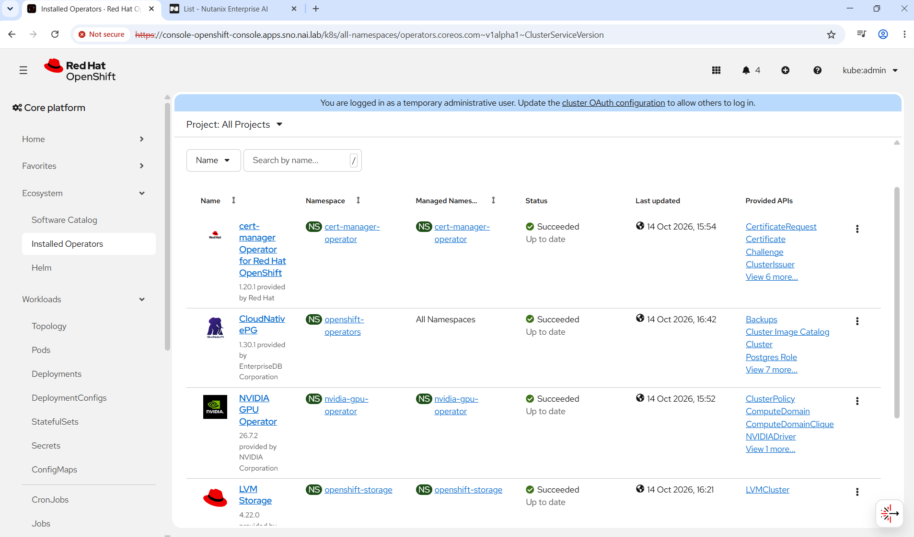
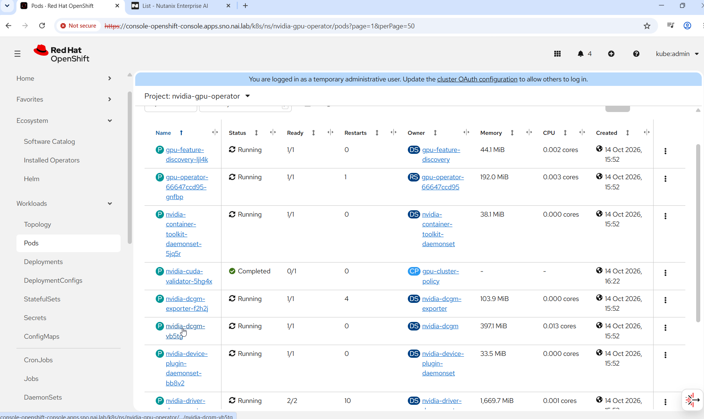
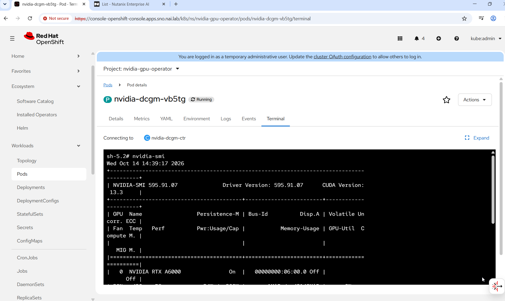
nvidia-smi inside OpenShift: RTX A6000, driver 595.91.07.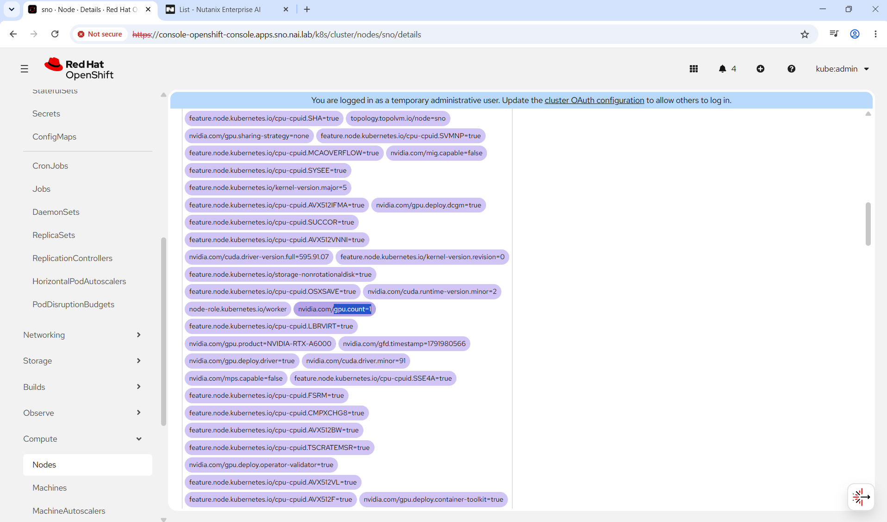
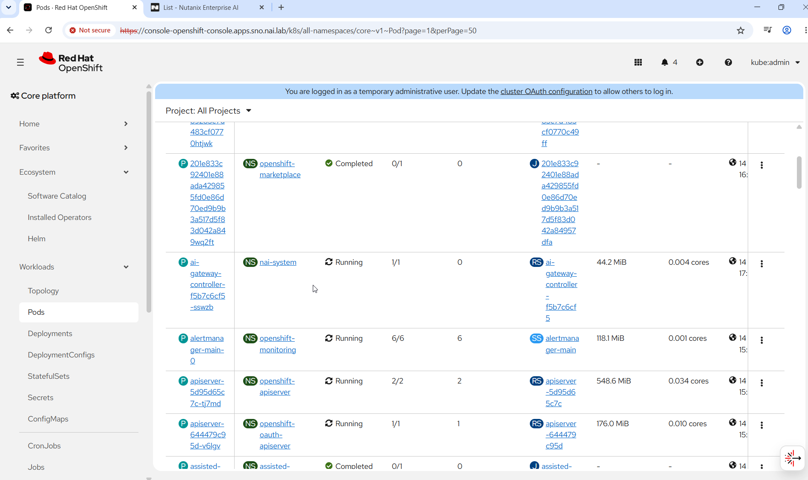
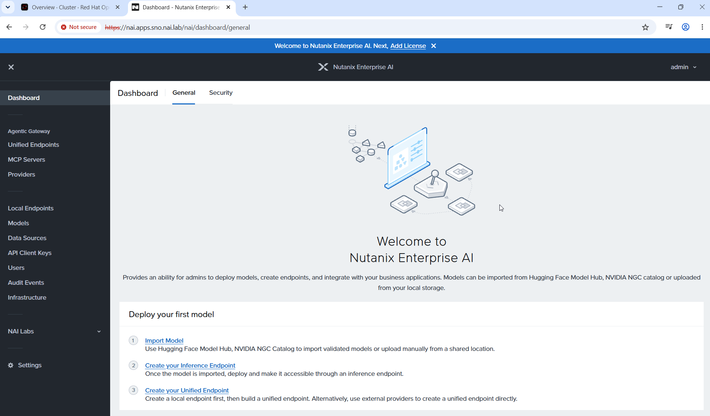
https://nai.apps.sno.nai.lab/nai.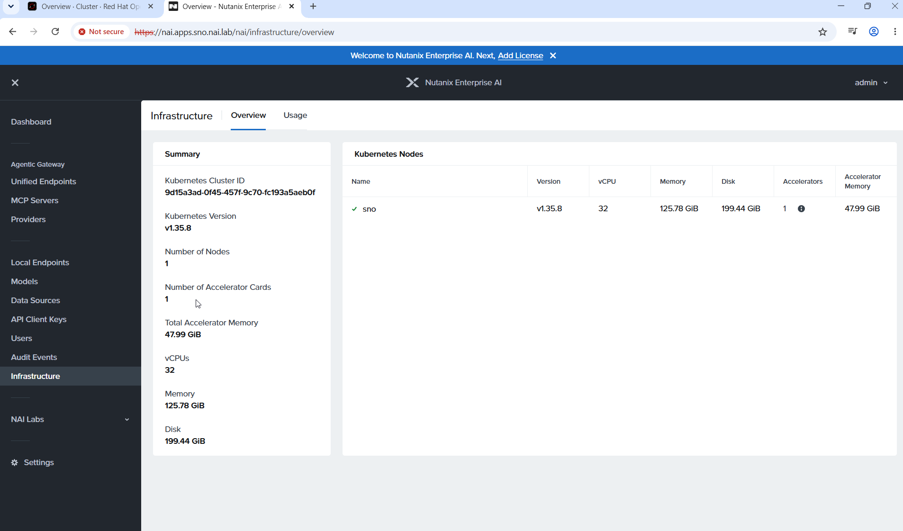
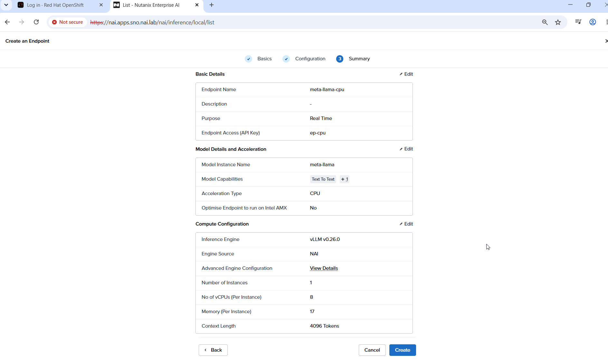
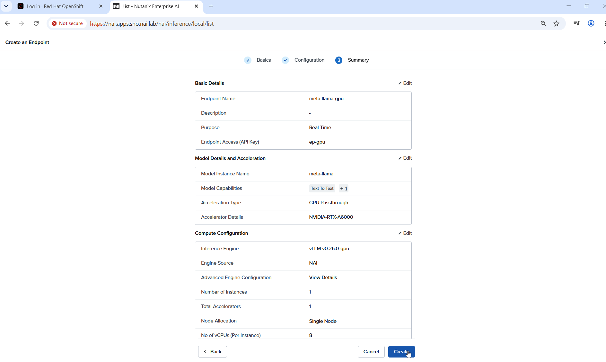
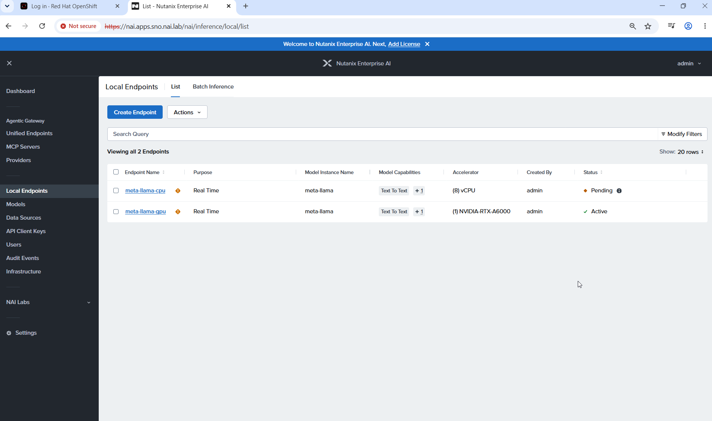
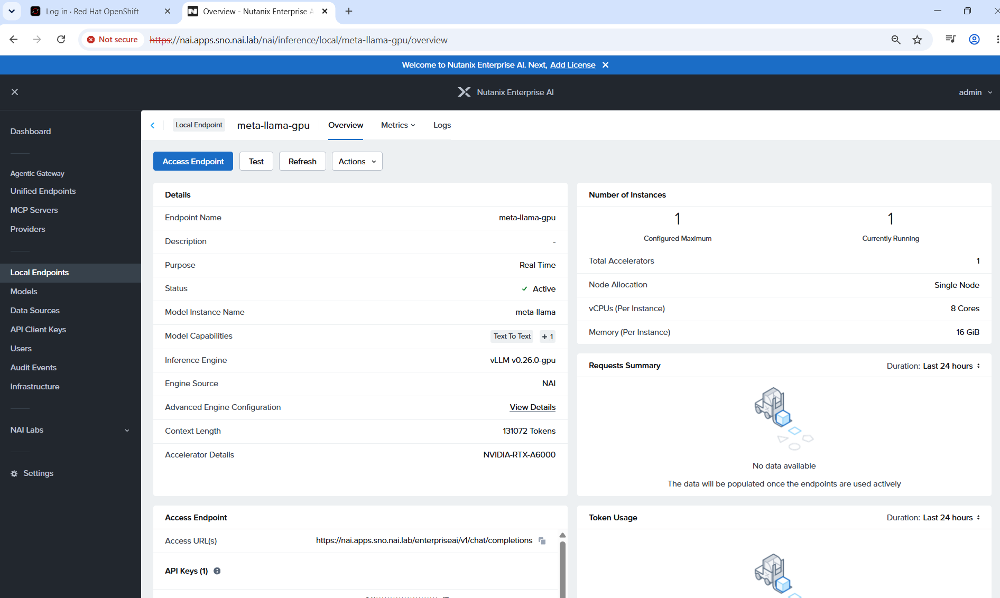
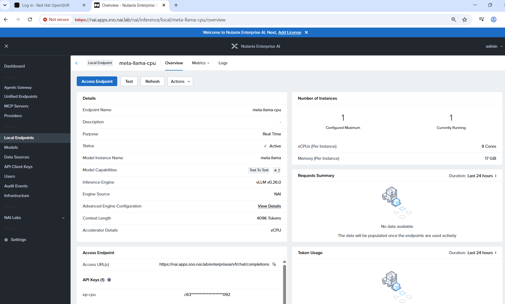
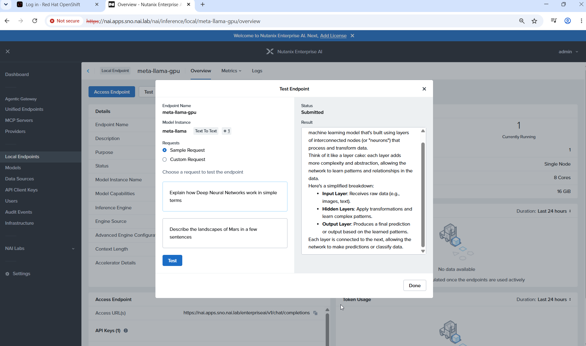
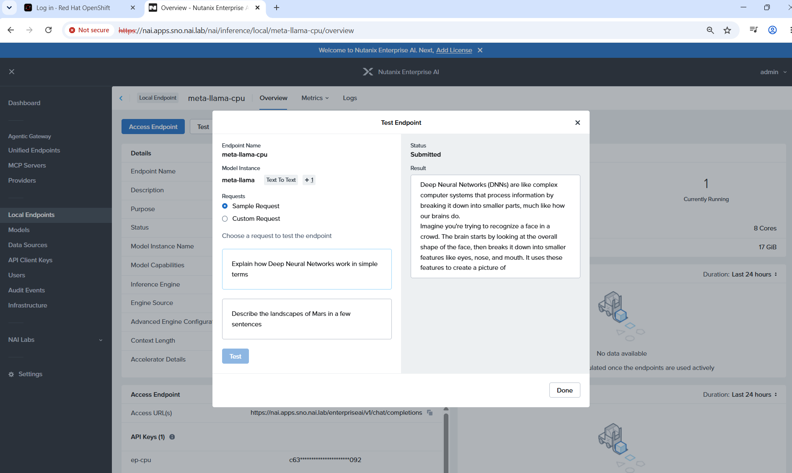
8Lessons learned
- Grant
anyuid, not a broad non-root policy. A cluster-widenonroot-v2grant made OpenShift force "must not run as root" onto NAI's ClickHouse, which then failed;restricted-v2gave the IAM UI a random user that could not write its cache. Restart pods after changing grants. - Let the charts own their namespaces. Pre-creating
nai-adminstopsnai-corefrom installing. - Plan the Gateway API version. On OpenShift 4.19 and later the ingress operator owns the Gateway API CRDs. Pick an OpenShift release that matches NAI's requirement wherever possible.
- Secure Boot and the NVIDIA driver. The GPU Operator compiles its driver inside the cluster; Secure Boot rejects that unsigned module. Use NVIDIA's precompiled signed driver where available, or disable Secure Boot on the node.
- GPU passthrough for VM-based clusters. Reserve the GPU for passthrough at host boot rather than releasing it from a running driver, and keep the VM's memory on the GPU's NUMA node.
- Size the node for NAI's own reservations. At 32 vCPU the first CPU endpoint stayed Pending ("Insufficient cpu"): NAI's platform pods already reserved about 19 cores. Resizing to 48 vCPU let it schedule. Endpoint memory must also meet the model's minimum, or NAI rejects the request (NAI-10014).
- Same model, very different speed. On this lab the GPU endpoint generated about 228 tokens/s against about 0.8 on 8 CPU cores for a 1B model. CPU endpoints suit light use; tune them before relying on them.
- No load balancer is needed. NAI's gateway reports no external address without one, which is expected; the Route provides access.
9Next steps
- Tune CPU inference (thread pinning, CPU-engine settings, Intel AMX on supported CPUs) and measure CPU and GPU endpoints under load through NAI's gateway.
- Test larger models: an 8B-class model on the GPU, and the CPU sizing it needs.
- Repeat on an OpenShift release whose managed Gateway API matches NAI's requirement, to remove the override.
- Extend to multi-node OpenShift with dedicated GPU worker nodes.